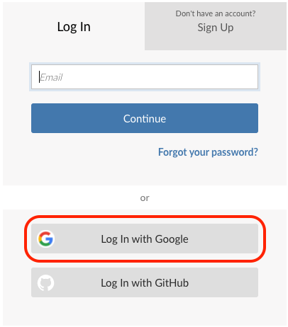
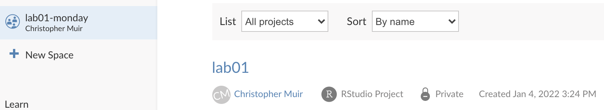
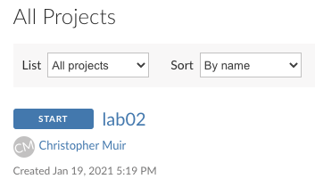
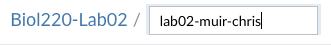

Labs for Intro Biostatistics
Setup
Software and Cloud Services
All labs will use R, RStudio, and Posit Cloud.
R is a computer program that allows an extraordinary range of statistical calculations. It is a free program, mainly written by volunteer contributors from around the world.
RStudio is a separate program, also free, that allows you to easily organize separate tabs for R code files, graphic, help docs, and more.
For this course, you won’t need R and RStudio installed on your own device because we will work in Posit Cloud. However, if you wish to install them on your device, go to https://rstudio.com/products/rstudio/download/ for instructions about getting set up.
Using Posit Cloud
We have setup Workspaces for each lab assignment and each lab section. For example, the workspace for lab01 materials for section 001 is lab01-001. Join the Workspace for each lab by clicking on the appropriate link in Google Classroom (e.g. “Lab 01-005 Posit Cloud Link” for the first week’s materials for section 005)
Important: Login with your userid@hawaii.edu account, not a personal gmail account. If you accidentally use your personal account, let me know. I will delete it while you register with the university account.
Note: Wherever images say “lab02”, replace that with the actual lab number you will be completing (e.g. “lab01” or “lab11”).

- Once you’re logged in, the lab01 Workspace will looking something like this (note: where it says “-monday” in the picture should be your section number):

Each item listed under “All Projects” is a “Project” within the lab01-section Workspace. Each week I will create a Project template that you will copy and work from (you cannot edit the original).
- To create your own, click “START” to the left of “lab01”.

- Once the Project is copied and deployed, rename the Project from “lab01” to include your name like this:
lab01-muir-chris

Disclaimer: These labs rely heavily on those developed by Mike Whitlock for his BIOL 300 course at UBC https://www.zoology.ubc.ca/~whitlock/bio300/. In some cases the materials have been used verbatim, in other cases Chris Muir, and/or Andy Rominger have added new material, or heavily modified the original material by Prof. Whitlock.